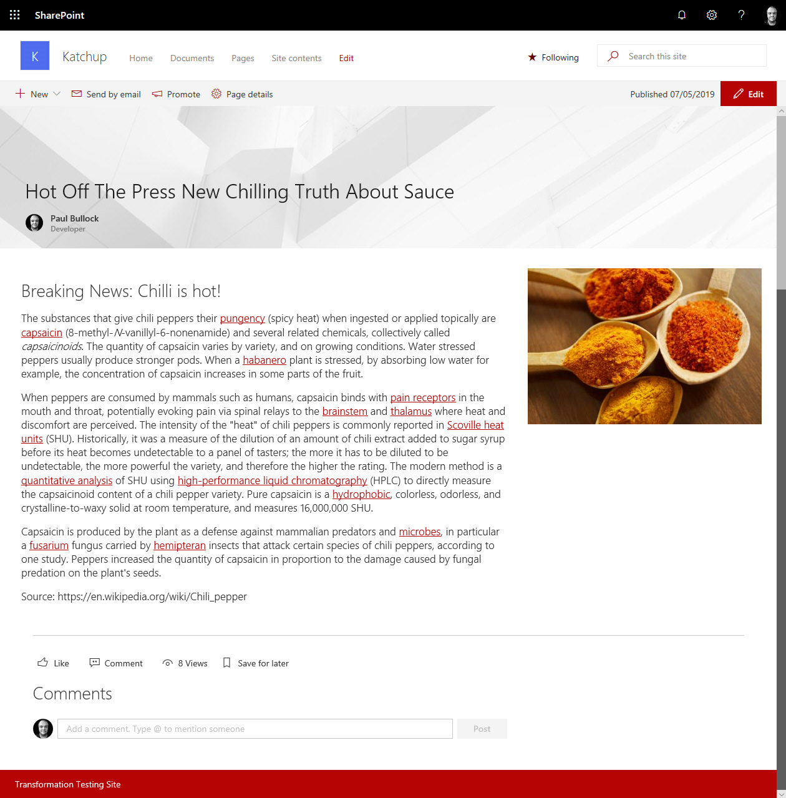

Modernize Blog Pages
Summary
Converts all blog pages in a site, this includes:
- Conversion of blog pages
- Connecting to MFA or supplying credentials
- Includes Logging to File, log flushing into single log file
Note
This script uses the older SharePoint PnP PowerShell Online module

# Classic blog site url
$SourceUrl,
# Target modern communication site url
[string]$TargetUrl,
# Supply credentials for multiple runs/sites
$Credentials = Get-Credential
# Specify log file location
[string]$LogOutputFolder = "c:\temp"
Connect-PnPOnline -Url $SourceUrl -Credentials $Credentials -Verbose
Start-Sleep -s 3
Write-Host "Modernizing blog pages..." -ForegroundColor Cyan
$posts = Get-PnPListItem -List "Posts"
Write-Host "pages fetched"
Foreach($post in $posts)
{
$postTitle = $post.FieldValues["Title"]
Write-Host " Processing blog post $($postTitle)"
ConvertTo-PnPClientSidePage -Identity $postTitle `
-BlogPage `
-Overwrite `
-TargetWebUrl $TargetUrl `
-LogType File `
-LogVerbose `
-LogSkipFlush `
-LogFolder $LogOutputFolder `
-KeepPageCreationModificationInformation `
-PostAsNews `
-SetAuthorInPageHeader `
-CopyPageMetadata
}
# Write the logs to the folder
Save-PnPClientSidePageConversionLog
Write-Host "Blog site modernization complete! :)" -ForegroundColor Green
Check out the PnP PowerShell to learn more at: https://aka.ms/pnp/powershell
Contributors
| Author(s) |
|---|
| Bert Jansen |
Disclaimer
THESE SAMPLES ARE PROVIDED AS IS WITHOUT WARRANTY OF ANY KIND, EITHER EXPRESS OR IMPLIED, INCLUDING ANY IMPLIED WARRANTIES OF FITNESS FOR A PARTICULAR PURPOSE, MERCHANTABILITY, OR NON-INFRINGEMENT.